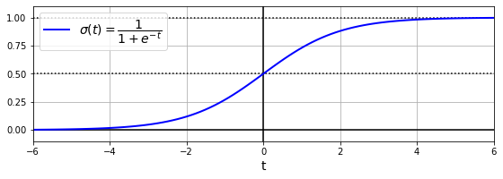
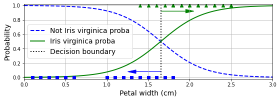
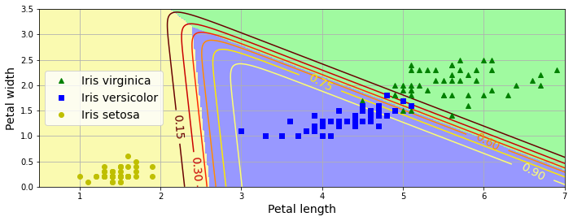

Section 2 — Training Linear Models & Support Vector Machines
Κανόνας πηγών: Το παρόν υλικό είναι απλή ελληνική επεξήγηση μόνο των ανεβασμένων αρχείων DAMA61 ΟΣΣ2, Géron Chapter 4/5, δύο notebooks και δύο απομαγνητοφωνήσεων. Οι τίτλοι και η ομαδοποίηση αποτελούν διδακτική ταξινόμηση της ίδιας ύλης. Δεν προστίθεται νέα θεωρία, νέο dataset ή πρωτότυπη άσκηση.
Ανάγνωση παραπομπών: Η «σελίδα PDF» είναι η θέση στο πραγματικό ανεβασμένο αρχείο. Το «κελί» στο .ipynb αριθμείται από 0, όπως βρίσκεται αποθηκευμένο στη σειρά cells. Οι απομαγνητοφωνήσεις δεν περιλαμβάνουν timestamps και τεκμηριώνονται με γραμμές.
Κώδικας: Παραθέτουμε μόνο πραγματικά αποσπάσματα notebook και εξηγούμε τη σύνδεσή τους με τα προηγούμενα κελιά. Δεν ισχυριζόμαστε νέα εκτέλεση. NOT EXECUTED (νέα εκτέλεση). Αποθηκευμένα outputs του πρωτοτύπου αναγνωρίζονται ρητά ως τέτοια.
Part 5 — Ταξινόμηση με πιθανότητες
Μάθημα 13 — Logistic Regression και Sigmoid: ταξινόμηση δύο κατηγοριών
Προαπαιτούμενα από την υπάρχουσα ύλη: Μαθήματα 02–04.
Από την πηγή — τι διδάσκεται
Η Logistic Regression λέγεται regression, αλλά στο βιβλίο παρουσιάζεται ως μέθοδος ταξινόμησης. Ειδικότερα, για δύο κατηγορίες εκτιμά την πιθανότητα συμμετοχής στη θετική κατηγορία. Παίρνει τη γραμμική συνάρτηση των χαρακτηριστικών και την περνά από τη sigmoid, η οποία παράγει τιμή από μηδέν μέχρι ένα. Το συμπλήρωμά της μέχρι το ένα αντιστοιχεί στην άλλη κατηγορία.
Οι δύο κατηγορίες ορίζονται στο παράδειγμα του βιβλίου ως Iris virginica και «όχι Iris virginica». Το βιβλίο εξετάζει το πλάτος πετάλου, εκπαιδεύει LogisticRegression και δείχνει πώς ένα μοντέλο μπορεί να επιστρέψει κατηγορία με predict ή πιθανότητες με predict_proba. Η απόφαση για δύο κατηγορίες συνδέεται με όριο πιθανότητας 0.5.
Οπτική εξήγηση — πραγματικά σχήματα της πηγής

Αυθεντικό αποθηκευμένο διάγραμμα: 04_training_linear_models(1).ipynb — κελί 76 (αρίθμηση από το 0). Αναπαράγεται από το υπάρχον output του notebook· NOT EXECUTED εδώ.
Πώς να το διαβάσεις: Στη μέση του σχήματος, όταν t=0, η έξοδος της sigmoid είναι 0,5. Προς τα δεξιά πλησιάζει το 1 και προς τα αριστερά το 0.

Αυθεντικό αποθηκευμένο διάγραμμα: 04_training_linear_models(1).ipynb — κελί 84 (αρίθμηση από το 0). Αναπαράγεται από το υπάρχον output του notebook· NOT EXECUTED εδώ.
Πώς να το διαβάσεις: Οι πιθανότητες για τις δύο κατηγορίες ίριδας αλλάζουν με το πλάτος πετάλου. Οι καμπύλες τέμνονται στο όριο απόφασης.
Απλή επεξήγηση της ίδιας έννοιας
Το z είναι η τιμή της γραμμικής σχέσης πριν τη sigmoid. Η sigmoid δεν μετατρέπει το μοντέλο σε απλή γραμμική πρόβλεψη αριθμού· το αποτέλεσμα χρησιμοποιείται ως εκτιμώμενη πιθανότητα. Αν η εκτίμηση είναι πάνω από το όριο της πηγής, ο ταξινομητής επιλέγει τη θετική κατηγορία. Δεν χρειάζεται να θυμάσαι αρχικά τη μορφή της καμπύλης: η σημαντική ιδιότητα είναι ότι οι τιμές της περιορίζονται από μηδέν έως ένα.
Το βιβλίο σχεδιάζει την χαρακτηριστική καμπύλη sigmoid στο σχήμα 4-21 και χρησιμοποιεί ένα πραγματικό Iris dataset στα σχήματα 4-22 έως 4-24.
Καθοδηγούμενη εξήγηση — ακολουθούμε αργά την ίδια πηγή
Η Logistic Regression στο κεφάλαιο αυτό δεν προβλέπει μια οποιαδήποτε αριθμητική τιμή όπως η Linear Regression. Χρησιμοποιεί ένα γραμμικό score και τη sigmoid για να εκτιμήσει πιθανότητα δυαδικής κατηγορίας. Το score που μπαίνει στη sigmoid μπορεί να είναι θετικό ή αρνητικό· η έξοδος όμως βρίσκεται ανάμεσα στο μηδέν και στο ένα.
Διάβασε τη sigmoid με τη σειρά: στον παρονομαστή υπάρχει το ένα συν την εκθετική ποσότητα με αρνητικό score. Όταν το score είναι μηδέν, η εκθετική ποσότητα είναι ένα, ο παρονομαστής είναι δύο και η πιθανότητα είναι 0.5. Η δεύτερη πιθανότητα, για την κατηγορία μηδέν, είναι ένα μείον την πρώτη.
Στο πραγματικό παράδειγμα Iris, η πηγή εξετάζει το πλάτος του πετάλου. Για τις συγκεκριμένες εισόδους 1.7 και 1.5, το notebook έχει αποθηκεύσει την πρόβλεψη True και False. Δεν πρόκειται για αριθμούς που επιλέξαμε για να φτιάξουμε νέα άσκηση.
Οι τύποι της πηγής και τι σημαίνουν
Προφορική ανάγνωση και επεξήγηση: Η σίγκμοϊντ του ζήτα είναι ένα δια του ένα συν ε στη δύναμη μείον ζήτα. Η πιθανότητα της κατηγορίας ένα υπολογίζεται από αυτή τη συνάρτηση, και η πιθανότητα της κατηγορίας μηδέν είναι ένα μείον την πρώτη πιθανότητα.
Αριθμητικό παράδειγμα ή εφαρμογή — αποκλειστικά από την πηγή
Υπαρκτό παράδειγμα Iris: Στο notebook το LogisticRegression(random_state=42) εκπαιδεύεται με petal width. Για τις δύο εισόδους [[1.7],[1.5]], το αποθηκευμένο predict δίνει array([True, False]): το πρώτο κρίθηκε Iris virginica και το δεύτερο όχι.
Βασική Python από το πραγματικό notebook
Πριν από τον κώδικα: Η διαδικασία και η σειρά των εντολών έχουν οριστεί από τα συγκεκριμένα κελιά του δοσμένου notebook. Δεν δημιουργούμε νέα υλοποίηση.
Ακριβές απόσπασμα του παρεχόμενου 04_training_linear_models(1).ipynb, κελί 83 (αρίθμηση από 0):
from sklearn.linear_model import LogisticRegression
from sklearn.model_selection import train_test_split
X = iris.data[["petal width (cm)"]].values
y = iris.target_names[iris.target] == 'virginica'
X_train, X_test, y_train, y_test = train_test_split(X, y, random_state=42)
log_reg = LogisticRegression(random_state=42)
log_reg.fit(X_train, y_train)Ακριβές απόσπασμα του παρεχόμενου 04_training_linear_models(1).ipynb, κελί 86 (αρίθμηση από 0):
log_reg.predict([[1.7], [1.5]])Επεξήγηση των πραγματικών βημάτων: Το κελί 83 φορτώνει το iris, επιλέγει τη στήλη petal width (cm), ορίζει δυαδικούς στόχους και κάνει train_test_split(X,y,random_state=42). Κατόπιν δημιουργεί LogisticRegression και καλεί fit. Το κελί 86 ζητά τις δύο προβλέψεις. Όλες οι κλάσεις προέρχονται από τα συγκεκριμένα δοσμένα κελιά.
Εκτέλεση: NOT EXECUTED εδώ· οποιαδήποτε αριθμητική έξοδος παραπάνω είναι αποθηκευμένη στο πρωτότυπο notebook.
Τα σύμβολα της sigmoid με τη σειρά
Το είναι το score που έχει υπολογίσει το μοντέλο από τα χαρακτηριστικά και τα βάρη. Το είναι το σύμβολο που εμφανίζεται στην εκθετική συνάρτηση. Το είναι το όνομα της συνάρτησης sigmoid. Η έξοδός της βρίσκεται στο διάστημα από 0 έως 1. Για , η εκθετική ποσότητα ισούται με 1, άρα ο παρονομαστής είναι 2 και η sigmoid δίνει . Πρόκειται για άμεση ανάγνωση του τύπου και του κεντρικού σημείου στο υπάρχον σχήμα 4-21, όχι νέο παράδειγμα εφαρμογής.
Διαβάζουμε τον πραγματικό κώδικα γραμμή προς γραμμή
Οι παρακάτω παρατηρήσεις εξηγούν μόνο τις εντολές που υπάρχουν ήδη στα παρατιθέμενα αποσπάσματα. Δεν αποτελούν νέο πρόγραμμα. Για την ακριβή προέλευση κάθε block χρησιμοποιούμε τις ήδη σημειωμένες παραπομπές notebook/κελιού του μαθήματος. Νέα εκτέλεση: NOT EXECUTED.
Απόσπασμα 1, στη σειρά της πηγής: - from sklearn.linear_model import LogisticRegression — Φέρνει στον κώδικα τη βιβλιοθήκη, τη συνάρτηση ή την κλάση που χρησιμοποιείται ήδη σε αυτό το δοσμένο παράδειγμα. - from sklearn.model_selection import train_test_split — Φέρνει στον κώδικα τη βιβλιοθήκη, τη συνάρτηση ή την κλάση που χρησιμοποιείται ήδη σε αυτό το δοσμένο παράδειγμα. - X = iris.data[["petal width (cm)"]].values — Επιλέγει συγκεκριμένα αρχικά χαρακτηριστικά του Iris, ακριβώς όπως ορίζει ο συγγραφέας. - y = iris.target_names[iris.target] == 'virginica' — Ορίζει τις πραγματικές ετικέτες των λουλουδιών από το Iris, σύμφωνα με το ερώτημα ταξινόμησης του παραδείγματος. - X_train, X_test, y_train, y_test = train_test_split(X, y, random_state=42) — Χωρίζει τα συγκεκριμένα δεδομένα σε υποσύνολα σύμφωνα με τη ρύθμιση του notebook. - log_reg = LogisticRegression(random_state=42) — Δημιουργεί τον ταξινομητή Logistic Regression με τις υπερπαραμέτρους του συγκεκριμένου notebook. - log_reg.fit(X_train, y_train) — Εκπαιδεύει το ήδη ορισμένο μοντέλο στα συγκεκριμένα χαρακτηριστικά και τις γνωστές εξόδους. Απόσπασμα 2, στη σειρά της πηγής: - log_reg.predict([[1.7], [1.5]]) — Ζητά πρόβλεψη από το ήδη εκπαιδευμένο μοντέλο για τις τιμές εισόδου του βιβλίου.
Περιορισμοί και προσοχή
Η έξοδος της logistic είναι εκτίμηση πιθανότητας σύμφωνα με το μοντέλο, όχι εγγύηση βεβαιότητας. Για πάνω από δύο αμοιβαία αποκλειόμενες κατηγορίες, η Section παρουσιάζει Softmax.
Τι κρατώ από το υπάρχον μάθημα
Logistic Regression: γραμμικό score → sigmoid → εκτίμηση πιθανότητας → δυαδική κατηγορία.
Μάθημα 14 — Cross-Entropy: πώς μετράμε λάθη στην ταξινόμηση
Προαπαιτούμενα από την υπάρχουσα ύλη: Μάθημα 13 και Gradient Descent.
Από την πηγή — τι διδάσκεται
Η ταξινόμηση χρειάζεται συνάρτηση κόστους κατάλληλη για πιθανότητες. Η ΟΣΣ2 παρουσιάζει την cross-entropy loss, που ο Géron ονομάζει και log loss. Η συνάρτηση συγκρίνει την πραγματική ετικέτα, μηδέν ή ένα, με την εκτιμώμενη πιθανότητα του μοντέλου. Όταν το μοντέλο αναθέτει πολύ μικρή πιθανότητα σε μια κατηγορία που ήταν στην πραγματικότητα σωστή, η ποινή αυξάνεται σημαντικά.
Το βιβλίο παρουσιάζει την εξίσωση κόστους για τη Logistic Regression και τις μερικές παραγώγους της. Έτσι η Gradient Descent που ήδη γνωρίζουμε μπορεί να αλλάζει τα βάρη, αλλά τώρα με σφάλμα ταξινόμησης αντί για MSE παλινδρόμησης.
Οπτική εξήγηση — πραγματικά σχήματα της πηγής
Αυθεντικό αποθηκευμένο διάγραμμα: 04_training_linear_models(1).ipynb — κελί 84 (αρίθμηση από το 0). Αναπαράγεται από το υπάρχον output του notebook· NOT EXECUTED εδώ.
Πώς να το διαβάσεις: Η εικόνα δείχνει μόνο προβλεπόμενες πιθανότητες, όχι το γράφημα της cross-entropy. Η ενότητα της πηγής για cross-entropy εξηγεί πώς βαθμολογούνται αυτές οι πιθανότητες σε σχέση με τη γνωστή πραγματική κατηγορία.
Απλή επεξήγηση της ίδιας έννοιας
Η ετικέτα y είναι η πραγματική απάντηση και το p η εκτίμηση του μοντέλου για την κατηγορία ένα. Αν η πραγματική τιμή είναι ένα, ο όρος του λογαρίθμου εξετάζει τη πιθανότητα p. Αν είναι μηδέν, εξετάζεται η πιθανότητα ένα μείον p. Δεν χρειάζεται να προσθέσουμε νέο αριθμητικό παράδειγμα: η απομαγνητοφώνηση ήδη περιγράφει τη μεγάλη ποινή στις βέβαιες αλλά λανθασμένες προβλέψεις.
Το log loss δεν ταυτίζεται με MSE. Και τα δύο όμως εκπληρώνουν τον ρόλο της συνάρτησης κόστους που ο αλγόριθμος εκπαίδευσης επιχειρεί να μειώσει.
Καθοδηγούμενη εξήγηση — ακολουθούμε αργά την ίδια πηγή
Η Logistic Regression χρειάζεται να μάθει βάρη, άρα χρειάζεται και συνάρτηση που λέει πόσο κακή είναι μια πρόβλεψη πιθανότητας. Η ΟΣΣ2 παρουσιάζει την Cross-Entropy. Αν το πραγματικό y είναι ένα, στον τύπο ενεργοποιείται ο όρος του λογαρίθμου της πιθανότητας της κατηγορίας ένα. Αν το y είναι μηδέν, ενεργοποιείται ο όρος που αφορά την πιθανότητα της κατηγορίας μηδέν.
Το αρνητικό πρόσημο μπροστά από το άθροισμα είναι μέρος του κριτηρίου που ελαχιστοποιούμε. Η προφορική διάλεξη τονίζει ότι ιδιαίτερα λανθασμένες εκτιμήσεις πιθανότητας προκαλούν μεγάλο κόστος. Η περιγραφή αυτή συνδέεται με τον λογάριθμο που εμφανίζεται μέσα στον τύπο.
Η εκπαίδευση συνεχίζει να χρησιμοποιεί Gradient Descent, αλλά το gradient υπολογίζεται τώρα για αυτή τη συνάρτηση κόστους και όχι για το MSE της γραμμικής παλινδρόμησης. Δεν μεταφέρουμε αυτομάτως τον παλιό τύπο gradient σε διαφορετική loss function.
Οι τύποι της πηγής και τι σημαίνουν
Προφορική ανάγνωση και επεξήγηση: Το μέσο κόστος είναι το αρνητικό άθροισμα όρων λογαρίθμου. Για κάθε δείγμα με σωστή ετικέτα ένα μετράται ο λογάριθμος της πιθανότητας ένα, ενώ για κάθε δείγμα με ετικέτα μηδέν ο λογάριθμος της πιθανότητας μηδέν.
Αριθμητικό παράδειγμα ή εφαρμογή — αποκλειστικά από την πηγή
Υπάρχουσα προφορική εξήγηση: Στις γραμμές 493–522 ο διδάσκων εξηγεί ότι μια πολύ λανθασμένη εκτίμηση η οποία έχει πολύ υψηλή σιγουριά πρέπει να δίνει μεγάλη απώλεια. Δεν καταγράφεται εδώ νέα αριθμητική άσκηση ούτε κατασκευάζεται μία.
Περιορισμοί και προσοχή
Η διατύπωση της συνάρτησης αφορά το συγκεκριμένο πρόβλημα δυαδικής ταξινόμησης. Η πολυταξική cross-entropy της Softmax παρουσιάζεται στο επόμενο μάθημα.
Τι κρατώ από το υπάρχον μάθημα
Cross-entropy: συγκρίνουμε πραγματική κατηγορία και εκτιμώμενη πιθανότητα· μεγάλες βέβαιες αστοχίες κοστίζουν περισσότερο.
Μάθημα 15 — Softmax Regression: πολλές κατηγορίες και πιθανότητες
Προαπαιτούμενα από την υπάρχουσα ύλη: Μαθήματα 13–14.
Από την πηγή — τι διδάσκεται
Η Softmax Regression αποτελεί επέκταση της λογικής ταξινόμησης σε περισσότερες από δύο αμοιβαία αποκλειόμενες κατηγορίες. Η ΟΣΣ2 δίνει για κάθε κατηγορία k ένα δικό της γραμμικό score. Κατόπιν η Softmax μετατρέπει το σύνολο αυτών των scores σε πιθανότητες που αθροίζουν σε ένα. Το μοντέλο μπορεί έτσι να συγκρίνει κατηγορίες και να επιλέξει εκείνη με τη μεγαλύτερη εκτίμηση.
Ο Géron χρησιμοποιεί ξανά το Iris, αυτή τη φορά με όλες τις τρεις κατηγορίες. Για κάθε λουλούδι υπολογίζονται πιθανότητες Iris setosa, versicolor και virginica. Το βιβλίο παρουσιάζει την cross-entropy για πολλές κατηγορίες και τη μαθηματική παράγωγο του score κάθε κατηγορίας.
Οπτική εξήγηση — πραγματικά σχήματα της πηγής

Αυθεντικό αποθηκευμένο διάγραμμα: 04_training_linear_models(1).ipynb — κελί 92 (αρίθμηση από το 0). Αναπαράγεται από το υπάρχον output του notebook· NOT EXECUTED εδώ.
Πώς να το διαβάσεις: Τα διαφορετικά χρώματα δείχνουν ποια από τις τρεις κατηγορίες έχει τη μεγαλύτερη προβλεπόμενη πιθανότητα σε κάθε περιοχή. Τα σημεία είναι πραγματικές παρατηρήσεις Iris.
Απλή επεξήγηση της ίδιας έννοιας
Στη Softmax η έξοδος δεν είναι ένας αριθμός πρόβλεψης παλινδρόμησης, ούτε μόνο μια πιθανότητα όπως στη δυαδική logistic. Είναι ένα σύνολο πιθανοτήτων, μία για κάθε κατηγορία. Το γράμμα Κ δηλώνει πόσες κατηγορίες υπάρχουν. Το e στην εξίσωση είναι η βάση της εκθετικής συνάρτησης. Κάθε score μετατρέπεται σε θετική ποσότητα και διαιρείται με το άθροισμα όλων των αντίστοιχων ποσοτήτων.
Η άσκηση 12 του Chapter 4 περιλαμβάνει πλήρη χειροκίνητη εκπαίδευση Softmax με NumPy, Gradient Descent και Early Stopping. Εδώ τη θεωρούμε πραγματική άσκηση του βιβλίου, όχι νέο ζητούμενο.
Καθοδηγούμενη εξήγηση — ακολουθούμε αργά την ίδια πηγή
Με τη Softmax το βιβλίο περνά από δύο κατηγορίες σε περισσότερες. Για κάθε διαθέσιμη κατηγορία υπολογίζεται πρώτα ένα score. Η Softmax υψώνει την εκθετική συνάρτηση σε κάθε score και διαιρεί με το άθροισμα των αντίστοιχων εκθετικών όρων όλων των κατηγοριών. Γι’ αυτό προκύπτουν πιθανότητες που αθροίζουν σε ένα.
Στο πραγματικό παράδειγμα του notebook δίνεται το Iris με είσοδο πέντε και δύο. Οι αποθηκευμένες, στρογγυλοποιημένες πιθανότητες είναι 0, 0.04 και 0.96. Αθροίζοντας μηδέν συν 0.04 συν 0.96 παίρνουμε ένα. Η μεγαλύτερη τιμή είναι η τρίτη, άρα το μοντέλο επιλέγει την κατηγορία με δείκτη δύο, όπως καταγράφεται και στο predict.
Η πραγματική άσκηση 12 του Chapter 4 εκπαιδεύει τη Softmax με Batch Gradient Descent και Early Stopping. Αυτή η σύνδεση δεν εισάγει καινούριο παράδειγμα· δείχνει πώς χρησιμοποιούνται μαζί όσα υπάρχουν ήδη στα δύο συγκεκριμένα κεφάλαια της πηγής.
Οι τύποι της πηγής και τι σημαίνουν
Προφορική ανάγνωση και επεξήγηση: Η πιθανότητα της κατηγορίας κάπα είναι το ε στη δύναμη του score της κάπα κατηγορίας, διαιρεμένο με το άθροισμα των εκθετικών score όλων των κατηγοριών. Το άθροισμα των πιθανοτήτων είναι ένα.
Αριθμητικό παράδειγμα ή εφαρμογή — αποκλειστικά από την πηγή
Πραγματικό παράδειγμα Géron: Στο Iris και για χαρακτηριστικά petal length=5 και petal width=2, το μοντέλο προβλέπει κατηγορία 2 με αποθηκευμένες πιθανότητες array([[0. , 0.04, 0.96]]). Η μεγαλύτερη πιθανότητα είναι 0.96 για Iris virginica.
Βασική Python από το πραγματικό notebook
Πριν από τον κώδικα: Η διαδικασία και η σειρά των εντολών έχουν οριστεί από τα συγκεκριμένα κελιά του δοσμένου notebook. Δεν δημιουργούμε νέα υλοποίηση.
Ακριβές απόσπασμα του παρεχόμενου 04_training_linear_models(1).ipynb, κελί 89 (αρίθμηση από 0):
X = iris.data[["petal length (cm)", "petal width (cm)"]].values
y = iris["target"]
X_train, X_test, y_train, y_test = train_test_split(X, y, random_state=42)
softmax_reg = LogisticRegression(C=30, random_state=42)
softmax_reg.fit(X_train, y_train)Ακριβές απόσπασμα του παρεχόμενου 04_training_linear_models(1).ipynb, κελί 90 (αρίθμηση από 0):
softmax_reg.predict([[5, 2]])Ακριβές απόσπασμα του παρεχόμενου 04_training_linear_models(1).ipynb, κελί 91 (αρίθμηση από 0):
softmax_reg.predict_proba([[5, 2]]).round(2)Επεξήγηση των πραγματικών βημάτων: Το κελί 89 επιλέγει τα δύο χαρακτηριστικά πετάλων, θέτει y=iris["target"], κάνει train_test_split, δημιουργεί LogisticRegression(C=30,random_state=42) και καλεί fit. Τα κελιά 90–91 ελέγχουν προβλέψεις και πιθανότητες. Πρόκειται για τα ακριβή δεδομένα και τις μεθόδους της πηγής.
Εκτέλεση: NOT EXECUTED εδώ· οποιαδήποτε αριθμητική έξοδος παραπάνω είναι αποθηκευμένη στο πρωτότυπο notebook.
Ανάγνωση της αποθηκευμένης πρόβλεψης Softmax
Για την είσοδο που υπάρχει στο notebook, οι στρογγυλοποιημένες πιθανότητες είναι . Παρατηρούμε ότι:
Η μεγαλύτερη τιμή είναι η τρίτη, 0.96, άρα η αντίστοιχη προβλεπόμενη κατηγορία έχει δείκτη 2, όπως καταγράφεται στη predict. Αυτό δεν σημαίνει ότι τα τρία νούμερα αποτελούν ξεχωριστό νέο dataset· είναι μία αποθηκευμένη έξοδος του δοσμένου notebook. Πηγή: N4, κελιά 90–92· Géron, Chapter 4 — Softmax Regression, σελ. PDF 30–32.
Διαβάζουμε τον πραγματικό κώδικα γραμμή προς γραμμή
Οι παρακάτω παρατηρήσεις εξηγούν μόνο τις εντολές που υπάρχουν ήδη στα παρατιθέμενα αποσπάσματα. Δεν αποτελούν νέο πρόγραμμα. Για την ακριβή προέλευση κάθε block χρησιμοποιούμε τις ήδη σημειωμένες παραπομπές notebook/κελιού του μαθήματος. Νέα εκτέλεση: NOT EXECUTED.
Απόσπασμα 1, στη σειρά της πηγής: - X = iris.data[["petal length (cm)", "petal width (cm)"]].values — Επιλέγει συγκεκριμένα αρχικά χαρακτηριστικά του Iris, ακριβώς όπως ορίζει ο συγγραφέας. - y = iris["target"] — Ορίζει τις πραγματικές ετικέτες των λουλουδιών από το Iris, σύμφωνα με το ερώτημα ταξινόμησης του παραδείγματος. - X_train, X_test, y_train, y_test = train_test_split(X, y, random_state=42) — Χωρίζει τα συγκεκριμένα δεδομένα σε υποσύνολα σύμφωνα με τη ρύθμιση του notebook. - softmax_reg = LogisticRegression(C=30, random_state=42) — Δημιουργεί τον ταξινομητή Logistic Regression με τις υπερπαραμέτρους του συγκεκριμένου notebook. - softmax_reg.fit(X_train, y_train) — Εκπαιδεύει το ήδη ορισμένο μοντέλο στα συγκεκριμένα χαρακτηριστικά και τις γνωστές εξόδους. Απόσπασμα 2, στη σειρά της πηγής: - softmax_reg.predict([[5, 2]]) — Ζητά πρόβλεψη από το ήδη εκπαιδευμένο μοντέλο για τις τιμές εισόδου του βιβλίου. Απόσπασμα 3, στη σειρά της πηγής: - softmax_reg.predict_proba([[5, 2]]).round(2) — Ζητά τις εκτιμώμενες πιθανότητες των κατηγοριών από το ήδη εκπαιδευμένο μοντέλο.
Περιορισμοί και προσοχή
Η Softmax εδώ αφορά μία αμοιβαία αποκλειόμενη κατηγορία ανά δείγμα. Το βιβλίο διαχωρίζει αυτή την περίπτωση από την πολυετικετική ταξινόμηση, την οποία εξετάζει η άσκηση 11.
Τι κρατώ από το υπάρχον μάθημα
Softmax: πολλά scores → πιθανότητες που αθροίζουν στο 1 → επιλογή υψηλότερης πιθανότητας.